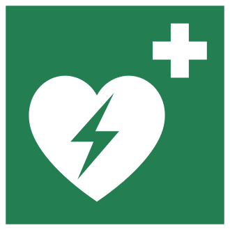

การช่วยเหลือ
และปฐมพยาบาล
ผู้ถูกไฟฟ้าดูด

4 ชั่วโมง ดู คิด ลงมือ ช่วยชีวิต
| เวลา | ช่วง | นักเรียนทำอะไร |
|---|---|---|
| 0:00–0:10 | เปิดเรื่อง | 🎬 ข่าวจริง · 💬 คิด-คู่-แชร์ |
| 0:10–0:20 | ทบทวนสัปดาห์ที่ 1 | 🙋 โหวต จริงหรือไม่จริง |
| 0:20–0:35 | แบบทดสอบก่อนเรียน | 📱 ทำ 20 ข้อบนมือถือ |
| 0:35–1:05 | 5.1 การช่วยเหลือ | 🙋 ใครช่วยถูก? · 🧰 เลือกวัสดุ · 🃏 เรียงบัตร · 🎭 บทบาทสมมติ |
| 1:05–1:45 | 5.2 CPR และ AED | 📏 ทายความลึก · 🎵 ตบโต๊ะตามจังหวะ · 📱 แตะจังหวะ · 🔎 จับผิดท่า |
| 1:45–1:55 | พัก | ☕ |
| 1:55–2:20 | 5.3 ข้อควรระวัง + เตรียมใบงาน | 🎬 คลิป · ☎️ ซ้อมโทร 1669 |
| 2:20–3:35 | ใบงานที่ 1.2 | 🚑 จำลองการช่วยเหลือ · ❤️ ฝึก CPR กับหมอน (กลุ่มละ 4–5 คน) |
| 3:35–3:45 | สรุปและวิจารณ์ผล | 🎲 สุ่มกลุ่มเล่า “พลาดตรงไหน” |
| 3:45–4:00 | สรุป + แบบทดสอบหลังเรียน | 📱 ทำ 20 ข้อ เทียบกับก่อนเรียน |
นาทีชีวิต: ถ้าเป็นเรา จะช่วยได้ไหม?
💬 ดูจบแล้วคุยกับเพื่อนข้าง ๆ
- คนที่ช่วยทำอะไรบ้าง?
- ถ้าเราอยู่ตรงนั้น จะทำอะไรก่อน?
- อะไรที่ห้ามทำเด็ดขาด?
จริง หรือ ไม่จริง?
ยังไม่รู้ก็ไม่เป็นไร ตอบตามที่คิด!
เปิด แบบทดสอบ → เลือก “ก่อนเรียน” → ทำ 20 ข้อ → กดส่ง
quiz.html (ลิงก์อยู่ในหน้าแรกของวิชา · สัปดาห์ที่ 2)
การช่วยเหลือและปฐมพยาบาลผู้ถูกไฟฟ้าดูด
5.1 การช่วยเหลือผู้ถูกไฟฟ้าดูด
ผู้ช่วยปลอดภัยก่อน · ตัดไฟ · วัสดุฉนวนแห้ง
5.2 การปฐมพยาบาล (CPR)
กดหน้าอก · เปิดทางเดินหายใจ · เป่าปาก · AED
5.3 ข้อควรระวัง
โทร 1669 · พื้นแข็ง · ทำต่อเนื่อง · ส่งแพทย์
ใบงานที่ 1.2 (ปฏิบัติ 3 ชม.)
ช่วยเหลือตามลำดับ · ฝึก CPR (ไม่ต้องมีหุ่น)
ช่วยคนอื่นได้ โดยที่ตัวเองปลอดภัย
- 3.2 แสดงความรู้เรื่องวิธีช่วยเหลือและปฐมพยาบาลผู้ถูกไฟฟ้าดูด
- 3.3 ปฏิบัติงานตามมาตรการความปลอดภัย ช่วยเหลือและปฐมพยาบาลผู้ถูกไฟฟ้าดูดได้ถูกวิธี
อ้างอิงมาตรฐานฝีมือแรงงานแห่งชาติ ช่างอิเล็กทรอนิกส์ ระดับ 1 · ข้อ 1.1 ความปลอดภัยในการปฏิบัติงาน (การปฐมพยาบาลเบื้องต้น)
เรียนจบสัปดาห์นี้ นักเรียนสามารถ…
- อธิบายวิธีการช่วยเหลือผู้ประสบอันตรายจากไฟฟ้าดูดได้ถูกต้อง (4.4)
- ปฏิบัติการช่วยเหลือได้ตามลำดับขั้นตอน (4.5)
- ปฐมพยาบาลด้วยการนวดหัวใจได้ตามแบบที่กำหนด (4.6)
- เตรียมอุปกรณ์ ทำงานอย่างรับผิดชอบ ตรงต่อเวลา (4.7)
เพื่อนถูกไฟดูดจากพัดลมที่ไฟรั่ว ใครช่วยถูก?
เอ
วิ่งไปจับแขน
ดึงออกมาทันที
บี
ใช้ไม้กวาดเขี่ย
แต่ยืนบนพื้นเปียก
ซี
ถอดปลั๊ก/สับเบรกเกอร์
ก่อนเข้าไปใกล้
การช่วยเหลือผู้ประสบ
อันตรายจากไฟฟ้าดูด
ช่วยให้รอด ต้องไม่กลายเป็นผู้ประสบภัยเสียเอง
ความปลอดภัยของผู้เข้าช่วยเหลือ
ร่างกายเป็นตัวนำ ถ้าจับตัวผู้ที่ยังติดไฟอยู่ กระแสจะไหลผ่านเราลงพื้น
✋🚫 ห้ามใช้มือเปล่าสัมผัสตัวผู้ประสบภัยโดยเด็ดขาด
จำให้ขึ้นใจ 4 ขั้น
ปรับ ภาพ 1.3 เขียนว่า “ตรวจการหายใจและชีพจร” แนวทาง AHA 2025 ให้คนทั่วไปดูการตอบสนองและการหายใจ ไม่ต้องคลำชีพจร [2]
ตัดไฟที่ “ต้นทาง” ให้แน่นอน
ถอดปลั๊ก
มือแห้ง จับที่ตัวปลั๊ก
ไม่ดึงที่สาย
สับเบรกเกอร์
หรือคัตเอาต์ลง
ตัดไฟทั้งวงจร
ปิดสวิตช์ที่ตัวเครื่อง
อาจไม่พอ!
ไฟที่รั่วอาจยังอยู่
เสริม แค่ปิดเครื่องใช้ไฟฟ้าอาจหยุดกระแสไม่ได้ ให้ถอดปลั๊กหรือปิดเบรกเกอร์ [5]
ทำแบบนี้ “ตัดไฟได้จริง” หรือ “ยังไม่พอ”?
ต้องเป็นฉนวน และแห้งสนิท
✅ ใช้ได้
ไม้แห้ง · เชือกแห้ง · ผ้าแห้ง
สายยางแห้ง · ถุงพลาสติกแห้ง
⛔ ห้ามใช้
โลหะทุกชนิด (ท่อ ลวด ไม้แขวนเสื้อลวด)
ของเปียก (ผ้าเปียก ไม้เปียก)
ผู้ช่วยควรยืนบนฉนวน เช่น แผ่นยาง ไม้กระดานแห้ง และสวมถุงมือยาง (ถ้ามี)
ตัดไฟไม่ได้! ของชิ้นไหน “ใช้ได้” หรือ “ห้ามใช้”? เขียนลงกระดาษ
ไม้กวาดด้ามไม้แห้ง
ท่อเหล็ก
ผ้าขนหนูเปียก
เชือกไนลอนแห้ง
เก้าอี้พลาสติกแห้ง
ไม้ถูพื้นชุบน้ำ
ไม้แขวนเสื้อลวด
พรมเช็ดเท้ายางแห้ง
สายไฟฟ้าแรงสูงขาด = ห้ามเข้าใกล้
อยู่ห่างอย่างน้อย 6 เมตร จนกว่าการไฟฟ้าตัดไฟ
ไม้แห้ง/ถุงมือยางทั่วไป กันไม่ได้
☎️ แจ้งการไฟฟ้า + 1669 · กันคนอื่นไม่ให้เข้าใกล้
| เบอร์ | หน่วยงาน |
|---|---|
| 1129 | การไฟฟ้าส่วนภูมิภาค (74 จังหวัด รวมอุตรดิตถ์) |
| 1130 | การไฟฟ้านครหลวง (กทม. นนทบุรี สมุทรปราการ) |
| 1669 | การแพทย์ฉุกเฉิน |
เอาทรายกลบตัว “ดูดไฟออก” ช่วยได้ไหม?
เรียงตัวอักษรตามลำดับที่ถูก เขียนลงกระดาษ เช่น “ค-ก-…”
ค → จ → ง → ก → ข → ฉ
แสดงให้ดูว่า “ช่วยอย่างไร ไม่ให้ตัวเองโดนดูด”
ผู้ประสบภัย
จับ “สายไฟ”
(เชือก/สายชาร์จที่ไม่เสียบ)
ผู้ช่วย
ตัดไฟ → ใช้ไม้บรรทัด/
กระดาษม้วนแทนไม้แห้ง
ผู้สังเกต
จดว่าข้ามขั้นไหน
แตะตัวโดยตรงไหม
ทุกคน
พูดออกเสียง
“โทร 1669!”
สุ่ม 2 กลุ่มออกมาแสดงหน้าห้อง
เพื่อนช่วยจับผิด
คำถามท้ายใบความรู้
- เมื่อพบผู้ถูกไฟฟ้าดูด สิ่งแรกที่ต้องทำคืออะไร เพราะเหตุใด
- วัสดุที่ใช้แยกผู้ประสบภัยต้องมีคุณสมบัติอย่างไร ยกตัวอย่าง
การปฐมพยาบาล
การช่วยฟื้นคืนชีพ (CPR)
มือสองข้างของเรา ช่วยให้หัวใจคนอื่นเต้นแทนได้
ไฟดูด → หมดสติ หยุดหายใจ หัวใจหยุดเต้น
Cardio
หัวใจ
Pulmonary
ปอด
Resuscitation
การกู้ชีพ
CPR = การปฏิบัติการช่วยฟื้นคืนชีพ · วิธีขั้นพื้นฐาน = BLS (Basic Life Support)
ทุกห่วงต้องเร็ว ขาดห่วงเดียว โอกาสรอดลด
โทร 1669
รู้ว่าหัวใจหยุด
เรียกความช่วยเหลือ
CPR ทันที
กดหน้าอก
คุณภาพสูง
AED
กระตุกหัวใจ
เร็วที่สุด
ทีมแพทย์
ช่วยชีวิตขั้นสูง
ดูแลหลังฟื้น
ห่วงที่ 1–3 เราทำได้เอง ก่อนรถพยาบาลมาถึง
ขั้นตอน CPR สำหรับคนทั่วไป
นายฉุกเฉินการแพทย์สอน CPR
🙋 ตอบพร้อมกัน
- เบอร์อะไร? 1669 โทรฟรี
- กดตรงไหน? กลางหน้าอก
- กดถึงเมื่อไร? จนหน่วยแพทย์มาถึง
ใบความรู้ vs แนวทางปัจจุบัน
| เรื่อง | ใบความรู้ 1.2 | AHA 2025 (ใช้ในสไลด์นี้) |
|---|---|---|
| ลำดับ | เปิดทางเดินหายใจ เป่าปากก่อน แล้วนวดหัวใจ | กดหน้าอกก่อน (C-A-B) แล้วค่อยเป่าปาก |
| การตรวจ | ตรวจการหายใจและคลำชีพจร | คนทั่วไปดูการตอบสนอง + การหายใจ ไม่ต้องคลำชีพจร |
| คนไม่ได้ฝึก | — | กดหน้าอกอย่างเดียวได้ (Hands-only CPR) |
| AED | ไม่ได้กล่าวถึง | ใช้ให้เร็วที่สุดเมื่อเครื่องมาถึง |
| ทารก | ใช้ 2 นิ้วกด | ใช้ 2 นิ้วโป้งโอบรอบอก หรือส้นมือเดียว (เลิกใช้ 2 นิ้ว) |
เหมือนเดิม: ลึก 5–6 ซม. · 100–120 ครั้ง/นาที · 30 : 2 · ห้ามใช้มือเปล่า · โทร 1669
แขนตรง ไหล่อยู่เหนือมือ ใช้น้ำหนักตัว
- คุกเข่าข้างผู้ป่วย
- โน้มตัวตั้งฉากกับหน้าอก
- ทิ้งน้ำหนักตัวลงบนแขน
- กดสุดแล้วผ่อนให้อกคืนตัว ไม่ยกมือ
จังหวะ 100–120 เร็วแค่ไหน? ตบโต๊ะตามไปด้วย!
👏 กติกา
- ครูเปิดคลิป ทุกคนตบโต๊ะตามจังหวะ
- นับดัง ๆ “หนึ่ง สอง สาม…” ถึง 30
- 30 ครั้งควรใช้เวลาประมาณ 15–18 วินาที
เปิด “ฝึกจังหวะ CPR” แล้วแตะ 30 ครั้ง × 1 รอบ
หน้าแรกของวิชา → สัปดาห์ที่ 2 → ❤️ ฝึกจังหวะ CPR → ข้อ ② · cpr.html
รอบแรกเปิดเสียงจังหวะ 110 · รอบสองปิดเสียง ลองทำเอง · คนที่ได้ “% อยู่ในช่วง” สูงสุด +1 คะแนนกลุ่ม
กดหน้าผาก · เชยคาง
คนหมดสติ ลิ้นตกไปปิดทางเดินหายใจ ลมที่เป่าจะไปไม่ถึงปอด
มือหนึ่งกดหน้าผาก อีกมือใช้นิ้วเชยคางขึ้น ให้ศีรษะแหงน
บีบจมูก ประกบปาก เป่าจนอกยก
- ใช้นิ้วบีบจมูกให้สนิท สูดลมหายใจ
- ประกบปากให้แนบสนิท เป่าประมาณ 1 วินาที จนเห็นหน้าอกยก
- ปล่อยปากให้ลมออก แล้วเป่าอีกครั้ง → กลับไปกดหน้าอกทันที
ปรับ ไม่ได้ฝึกหรือไม่สะดวกเป่าปาก → กดหน้าอกอย่างเดียว (Hands-only) ได้ [2] · ใบความรู้ที่บอก “เป่า 10 ครั้ง/นาที” ใช้กับผู้ที่ยังมีชีพจรแต่ไม่หายใจ
30 : 2 ครบ 5 รอบ ใช้เวลากี่นาที?
ครบ 5 รอบ (≈ 2 นาที) → ประเมินซ้ำ · ถ้ามีคนช่วย สลับคนกด เพราะเหนื่อยแล้วจะกดตื้น
CPR คุณภาพสูง ต้องมีอะไรบ้าง?
✏️ จดให้ครบ
- เร็ว 100–120 ครั้ง/นาที สม่ำเสมอ
- ลึก 5–6 ซม. บนพื้นแข็ง
- ปล่อยให้อกคืนตัวสุด
- หยุดกดให้น้อยที่สุด
เครื่องพูดบอกทุกขั้น คนทั่วไปใช้ได้
- เปิดเครื่อง แล้วทำตามเสียงบอก
- ติดแผ่นบนหน้าอกตามรูปบนแผ่น (คนอื่นกดหน้าอกต่อ)
- เครื่องวิเคราะห์ → ทุกคนถอย ห้ามแตะตัว
- กดปุ่มช็อกเมื่อสั่ง แล้วกดหน้าอกต่อทันที
ดูของจริง: กดหน้าอกอย่างเดียว + ใช้ AED
💬 คุยกับเพื่อน
- ผู้ช่วยพูดอะไรตอนโทร 1669?
- ตอนเครื่อง AED วิเคราะห์ ทุกคนทำอะไร?
- ใกล้บ้าน/วิทยาลัยเรา มี AED ที่ไหนบ้าง?
ท่านี้ “ถูก” หรือ “ผิด”?
คำถามท้ายใบความรู้
- CPR และ BLS ย่อมาจากอะไร และหมายถึงอะไร
- การนวดหัวใจภายนอกต้องกดลึกเท่าใด อัตรากี่ครั้งต่อนาที
- เหตุใดจึงห้ามใช้นิ้วมือกดซี่โครงขณะนวดหัวใจ
ข้อควรระวัง
ในการปฐมพยาบาล
ทำให้ถูก ทำให้เร็ว ทำให้ต่อเนื่อง
ก่อนช่วย · ระหว่างช่วย
⚡ ตัดไฟ/แยกออกก่อน
ไม่เช่นนั้นผู้ช่วยจะกลายเป็นผู้ประสบภัยรายที่สอง
☎️ โทร 1669 เร็วที่สุด
ให้คนอื่นโทรตั้งแต่เริ่มช่วย อยู่คนเดียว → โทรก่อนแล้วเริ่ม CPR
🪵 พื้นแข็งเสมอ
บนที่นอนนุ่ม แรงกดถูกดูดซับ ไม่ได้ผล
🔁 ทำต่อเนื่อง
จนผู้ป่วยหายใจเอง หรือหน่วยแพทย์มาถึง ไม่ว่าผู้ป่วยเป็นใคร
ตัวเล็ก ใช้แรงน้อยลง ลึกประมาณ ⅓ ของอก
👶 ทารก (ต่ำกว่า 1 ปี)
ลึกประมาณ 4 ซม. · ใช้นิ้วโป้ง 2 นิ้วโอบรอบอก หรือส้นมือเดียว
🧒 เด็ก
ลึกประมาณ 5 ซม. · อัตรา 100–120 ครั้ง/นาที เท่าผู้ใหญ่
ปรับ ใบความรู้ให้ใช้ 2 นิ้ว กดในทารก · AHA 2025 เลิกใช้ เพราะกดได้ไม่ลึกพอ [3]
ฟื้นแล้ว พูดได้แล้ว ก็ต้องไปโรงพยาบาล
🫀 อันตรายที่มองไม่เห็น
แผลภายนอกดูเล็ก แต่หัวใจ กล้ามเนื้อ สมองอาจบาดเจ็บ หัวใจเต้นผิดจังหวะได้
🔥 แผลไหม้
ล้างด้วยน้ำสะอาดที่เย็น · ห้ามทายาสีฟัน เนย น้ำแข็ง ครีม · ไม่เจาะตุ่มพอง
แพทย์ฉุกเฉินบอกว่าต้องระวังอะไร?
❓ ฟังแล้วตอบ
- ก่อนเข้าไปช่วย ต้องทำอะไร?
- ทำไมต้องไปโรงพยาบาล แม้ไม่มีแผล?
โทรแล้ว พูดให้ครบ 4 เรื่อง
- เกิดอะไร — คนถูกไฟดูด หมดสติ ไม่หายใจ
- ที่ไหน — สถานที่ + จุดสังเกตใกล้ ๆ
- กี่คน อาการอย่างไร — รู้สึกตัวไหม หายใจไหม
- เบอร์ติดต่อกลับ — แล้วอย่าเพิ่งวางสาย ทำตามที่เจ้าหน้าที่บอก
คนหนึ่งเป็นผู้แจ้ง อีกคนเป็นเจ้าหน้าที่ 1669
🧑 ผู้แจ้ง
เลือกสถานการณ์จากสัปดาห์นี้ 1 เรื่อง
พูดให้ครบ 4 เรื่องภายใน 30 วินาที
🎧 เจ้าหน้าที่
ถามกลับ: “หายใจไหมคะ?” “อยู่ตรงไหน?”
บอกผู้แจ้งให้เริ่มกดหน้าอก
สุ่ม 2 คู่ออกมาแสดง
การช่วยเหลือและปฐมพยาบาล
ผู้ถูกไฟฟ้าดูด
ไม่มีหุ่นก็ฝึกได้
มือถือ + หมอน + ไม้บรรทัด
จำลองการช่วยเหลือ
5 สถานการณ์
ตอนที่ 1
ฝึกจังหวะ CPR
ตำแหน่งมือ + จังหวะ
ตอนที่ 2
หมอน/ผ้าขนหนูม้วน
วางบนพื้นแข็ง
ฝึกท่าและความลึก
ถ้าโรงฝึกงานมีหุ่นฝึก CPR ใช้ตารางในใบงานชุดเดียวกันได้
ก่อนเริ่มใบงาน ⚠️
- ห้ามฝึกกดหน้าอกกับคนจริงโดยเด็ดขาด ซี่โครงหัก อวัยวะภายในบาดเจ็บได้
- หมอนวางบนพื้นแข็ง · ถ้ามีหุ่น เช็ดฆ่าเชื้อก่อน-หลังเปลี่ยนคน
- วัสดุฉนวนต้องแห้งสนิท ห้ามเปียกชื้น
- ทำตามลำดับอย่างเคร่งครัด ไม่ข้ามขั้นตอน
การช่วยเหลือผู้ประสบอันตรายจากไฟฟ้าดูด
| ที่ | ขั้นตอนการช่วยเหลือ | ผลการปฏิบัติ | เหตุผลประกอบ |
|---|---|---|---|
| 1 | ตัดกระแสไฟฟ้าที่สวิตช์หรือเบรกเกอร์ | สับเบรกเกอร์ลง | หยุดกระแส ผู้ช่วยปลอดภัย |
| 2 | เลือกวัสดุฉนวนที่ใช้แยกผู้ประสบภัย | … | … |
| 3 | แยกผู้ประสบภัยออกจากตัวนำไฟฟ้า | … | … |
| 4 | ตรวจการตอบสนองและการหายใจ แล้วโทร 1669 | … | … |
ทำหน้า 🚑 จำลองการช่วยเหลือ ครบ 5 สถานการณ์ แล้วเขียนด้วยภาษาของกลุ่มเอง (แถว 1 เป็นตัวอย่าง)
การปฐมพยาบาลด้วย CPR (กับหมอน)
- หมอนบนพื้นแข็ง · แตะตำแหน่งมือในเว็บ
- วางมือ แขนตรง กดลึก 5–6 ซม.
- กด 30 : เป่า 2 (ฝึกท่า ไม่เป่าจริง)
- ครบ 5 รอบ → จดผลจากหน้าฝึกจังหวะ
| รายการ | ค่าที่ได้ |
|---|---|
| ความลึก (ซม.) | … |
| อัตรา (ครั้ง/นาที) | … |
| จำนวนรอบ | … |
| อัตราส่วน กด : เป่า | … |
4 หน้าที่ ใครทำอะไร
ผู้กด
กดหมอน
ตามจังหวะ
ผู้แตะ
แตะหน้าฝึกจังหวะ
พร้อมผู้กด
ผู้สังเกต
ดูไม้บรรทัด
เช็กท่าแขนตรง
ผู้บันทึก
จดค่าลงตาราง
ในใบงาน
ทุกคนต้องได้เป็นผู้กดอย่างน้อย 1 รอบ (5 รอบ ≈ 2 นาที) ครูเดินประเมินรายบุคคล
จำลองการช่วยเหลือ 5 สถานการณ์ แล้วเขียนลงตาราง
ทุกกลุ่มชี้ให้ครูดูด้วยว่า ห้องนี้ ตู้ไฟ/เบรกเกอร์อยู่ตรงไหน
rescue.html · กลุ่มที่ได้คะแนนเว็บสูงสุด +2 คะแนน
ฝึก CPR กับหมอน ครบ 5 รอบ ทุกคนได้กด
⚠️ ห้ามกดบนตัวเพื่อน · หมอนบนพื้นแข็ง · สลับหน้าที่ทุกรอบ
cpr.html · เสร็จก่อน? ทำ แบบฝึกหัดออนไลน์ ต่อได้เลย
25 คะแนน · ผ่าน 20 คะแนน (80%)
| ที่ | รายการประเมิน | คะแนน |
|---|---|---|
| 1 | ตัดกระแสไฟฟ้าและเลือกวัสดุฉนวนได้ถูกต้อง (ตอนที่ 1) | 5 |
| 2 | แยกผู้ประสบภัยออกจากตัวนำได้ถูกวิธี ไม่สัมผัสโดยตรง (ตอนที่ 1) | 5 |
| 3 | วางมือถูกตำแหน่งและกดลึก 5–6 ซม. (ตอนที่ 2) | 5 |
| 4 | กดหน้าอกได้ในอัตรา 100–120 ครั้ง/นาที ครบ 5 รอบ (ตอนที่ 2) | 5 |
| 5 | ความละเอียด รอบคอบ และส่งงานตรงเวลา | 5 |
กลุ่มเรา “พลาดตรงไหน” และครั้งหน้าจะทำอย่างไร
- ขั้นตอนไหนทำผิดในเว็บจำลอง เพราะอะไร
- กดหน้าอกได้ % ในช่วงเท่าไร ยากตรงไหน
- ถ้าเจอเหตุการณ์จริง จะทำอะไรเป็นอย่างแรก
สิ่งที่เราได้เรียนในสัปดาห์นี้
5.1 การช่วยเหลือ
ตัดไฟก่อน · ตัดไม่ได้ใช้ฉนวนแห้ง · ห้ามมือเปล่า
5.2 CPR
ลึก 5–6 ซม. · 100–120 ครั้ง/นาที · 30 : 2 · AED ให้เร็ว
5.3 ข้อควรระวัง
โทร 1669 · พื้นแข็ง · ทำต่อเนื่อง · ฟื้นแล้วส่งแพทย์
ใบงาน 1.2
ช่วยตามลำดับ · ฝึก CPR · ห้ามกดอกคนจริง
20 ข้อชุดเดิม ดูซิว่าเก่งขึ้นกี่ข้อ!
เปิด แบบทดสอบ → เลือก “หลังเรียน” → ทำ 20 ข้อ → กดส่ง → พิมพ์ใบคะแนนส่ง Classroom
ทบทวนแล้วลองทำดู!
แบบฝึกหัด
ตรวจคำตอบทันที
แบบทดสอบ 20 ข้อ
ก่อนเรียน / หลังเรียน
ฝึกจังหวะ CPR
ฝึกต่อที่บ้านได้
ใบงานที่ 1.2
พิมพ์กลุ่มละ 1 ชุด
📖 การบ้าน: อ่านล่วงหน้าหน่วยที่ 2 เรื่อง สัญลักษณ์ทางไฟฟ้าและอิเล็กทรอนิกส์ (สัปดาห์ที่ 3) · ชวนที่บ้านดูว่าตู้ไฟอยู่ตรงไหน
เอกสารอ้างอิง
- จิรกิตติ์ วราภรณ์. แผนการจัดการเรียนรู้ วิชา 20100-1005 งานไฟฟ้าและอิเล็กทรอนิกส์เบื้องต้น (หลักสูตร ปวช. 2567) หน่วยที่ 1 ใบความรู้ที่ 1.2 และใบงานที่ 1.2. วิทยาลัยเทคนิคอุตรดิตถ์. (เอกสารต้นฉบับของบทเรียนนี้)
- Kleinman, M. E., et al. (2025). Part 7: Adult basic life support: 2025 American Heart Association Guidelines for CPR and ECC. Circulation, 152(Suppl 2), S448–S478. https://doi.org/10.1161/CIR.0000000000001369
- American Heart Association. (2025). Part 6: Pediatric basic life support. 2025 AHA Guidelines for CPR and ECC. https://cpr.heart.org/en/resuscitation-science/cpr-and-ecc-guidelines/pediatric-basic-life-support
- American Heart Association. (2025). Part 10: Adult and pediatric special circumstances of resuscitation (Electrocution). https://cpr.heart.org/en/resuscitation-science/cpr-and-ecc-guidelines/adult-and-pediatric-special-circumstances-of-resuscitation
- U.S. National Library of Medicine. (2025, October 14). Electrical injury. MedlinePlus Medical Encyclopedia. https://medlineplus.gov/ency/article/000053.htm
- การไฟฟ้าส่วนภูมิภาค. (15 พฤศจิกายน 2568). PEA แนะนำพบคนถูกไฟฟ้าดูดต้องทำอย่างไร. https://www.pea.co.th/news/corporate-news/1348
- กรมสนับสนุนบริการสุขภาพ กระทรวงสาธารณสุข. คำแนะนำการช่วยผู้ถูกไฟดูด และการปั๊มหัวใจ (CPR). https://www.hss.moph.go.th/show_topic.php?id=2344
- กรุงเทพธุรกิจ. เปิดวิธีช่วยเหลือคนถูก “ไฟดูด” ต้องรีบตัดกระแสไฟและแจ้ง 1669 กู้ชีพ! (ข้อมูลจากสถาบันการแพทย์ฉุกเฉินแห่งชาติ). https://www.bangkokbiznews.com/lifestyle/1027355
- Provincial Electricity Authority. PEA business and services (พื้นที่ให้บริการ 74 จังหวัด). https://www.pea.co.th/en/about-pea/pea-service
เข้าถึงแหล่งข้อมูลออนไลน์เมื่อ 24 ตุลาคม 2569
วิดีโอประกอบการสอน (YouTube)
- [V1] เรื่องเล่าเช้านี้. (2569, 27 กันยายน). นาทีชีวิต ทำ CPR ช่วยชีวิต เด็กถูกไฟดูดในบ้านที่น้ำท่วมขัง. https://www.youtube.com/watch?v=QrTp5_KiVSg
- [V2] สำนักข่าวไทย TNAMCOT (MCOT). PEA แนะแนวทางช่วยกรณีพบคนถูกไฟฟ้าดูด. https://www.youtube.com/watch?v=mRxd_LZW3FE
- [V3] โครงการเซฟไทย การไฟฟ้าส่วนภูมิภาค. PEA HERO ตอน การปฐมพยาบาลผู้ถูกไฟฟ้าดูด. https://www.youtube.com/watch?v=nQJnlg70sX0 (ดูแล้วในสัปดาห์ที่ 1 · ใช้ทบทวน)
- [V4] Ch7HD News. ไม่ควรทำ ! “ทรายกลบ” ช่วยคนงานไฟดูด | สนามข่าวเสาร์-อาทิตย์. https://www.youtube.com/watch?v=-JWRaDcnN38
- [V5] We Mahidol. วิธีช่วยเหลือและปฐมพยาบาลผู้ถูกไฟฟ้าดูด ไฟฟ้าช็อต. https://www.youtube.com/watch?v=trM7-oJ8W0M (7:42 · ดูเพิ่มเติมที่บ้าน)
- [V6] 1669 CHANNEL สพฉ. Motion 3 มารู้จักการทำ CPR กันครับ เมื่อพบผู้ที่หัวใจหยุดเต้นเฉียบพลัน. https://www.youtube.com/watch?v=SGX48U5LdjQ
- [V7] American Heart Association. Hands-Only CPR Instructional Video. https://www.youtube.com/watch?v=M4ACYp75mjU
- [V8] ศูนย์ฝึกอบรมปฐมพยาบาลและสุขภาพอนามัย สภากาชาดไทย. High Quality CPR 2025. https://www.youtube.com/watch?v=5rBUhYFtcBM
- [V9] ศูนย์ฝึกอบรมปฐมพยาบาลและสุขภาพอนามัย สภากาชาดไทย. CPR Hands only and AED สำหรับประชาชน. https://www.youtube.com/watch?v=tno42mG4CL8
- [V10] Thai PBS. ข้อควรปฏิบัติเมื่อถูกไฟดูด : CHECK-UP สุขภาพ. https://www.youtube.com/watch?v=AdTJnCFXIn0
ฝังจากช่องผู้เผยแพร่โดยตรง ไม่ได้ดาวน์โหลดหรือตัดต่อ · ตรวจว่ายังเปิดดูได้เมื่อ 24 ตุลาคม 2569 · ครูควรดูก่อนสอนทุกครั้ง เพราะคลิปอาจถูกลบหรือย้าย · คลิปเก่าบางคลิปอาจสอนเป่าปากก่อน ให้ยึดลำดับในสไลด์